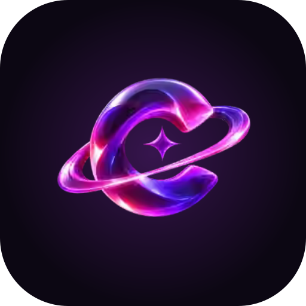

O CONNECT na tela inicial

CONNECTAplicativo web · PWA
Instale o CONNECT como aplicativo web (PWA). Ele abre diretamente, sem a barra do navegador. Não é necessário baixar APK de terceiros.
Verificando a instalação…
Entrada direta no celular, com a experiência do CONNECT em uma janela própria.

Instale o CONNECT como aplicativo web (PWA). Ele abre diretamente, sem a barra do navegador. Não é necessário baixar APK de terceiros.
Verificando a instalação…
O app instalado usa o próprio site. Conversas e perfis continuam protegidos pelo Supabase e precisam de internet; dados privados não ficam no cache offline do aplicativo.
Use o botão acima. Se ele não abrir o instalador, toque em ⋮ → Instalar app ou Adicionar à tela inicial.
No Safari, toque em Compartilhar → Adicionar à Tela de Início → Adicionar.
Abra o ícone CONNECT criado na tela inicial. Entre normalmente com seu e-mail e senha.
Quando estiver sem internet, o aplicativo mostra uma página segura de reconexão, sem armazenar conversas pessoais no cache.